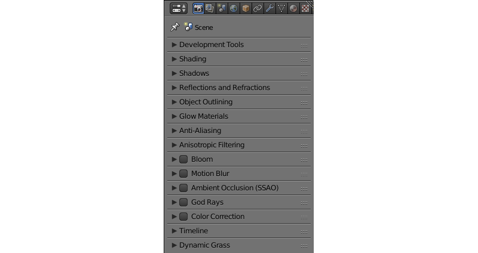
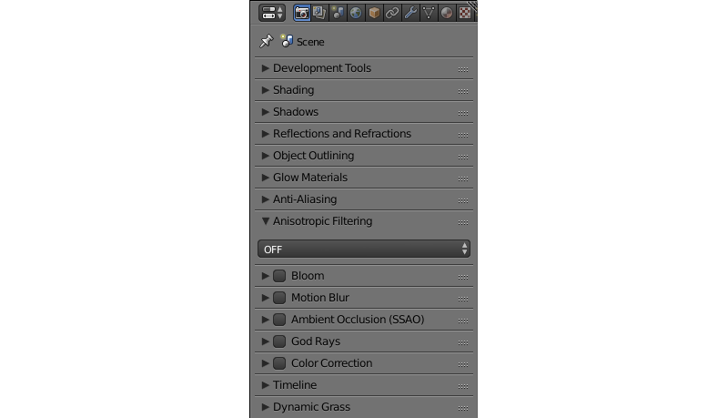
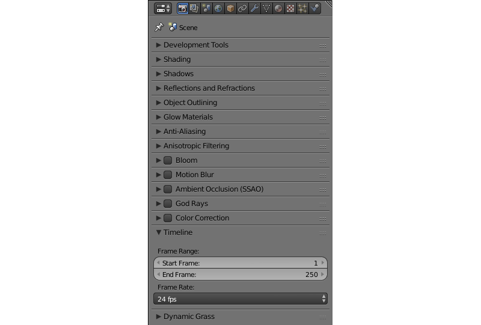
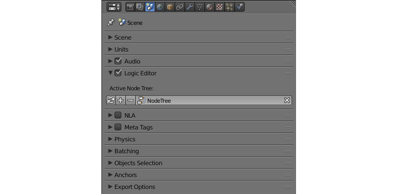
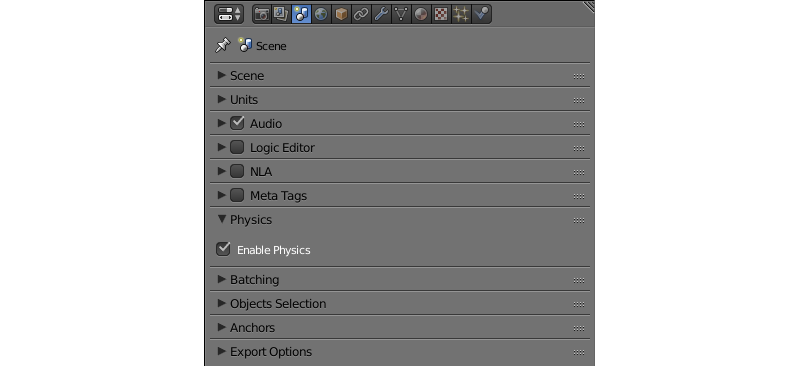
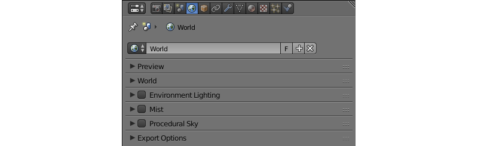
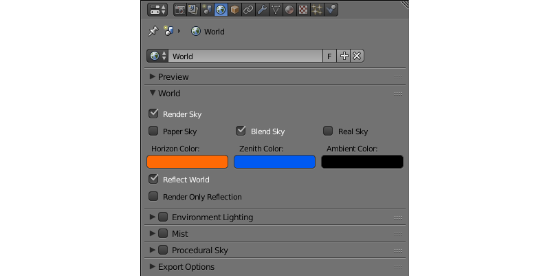
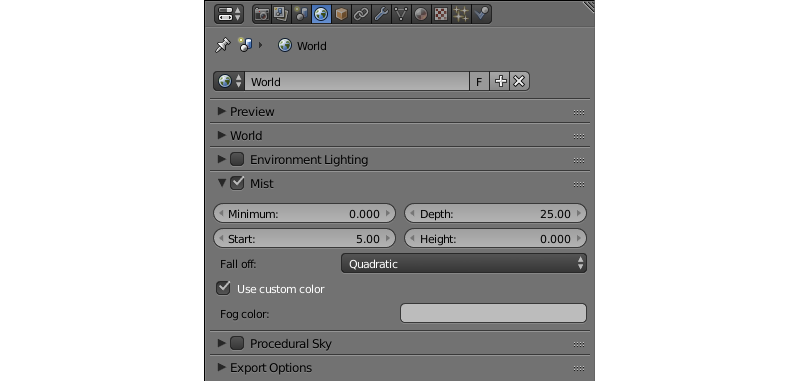

Scene Settings¶
Table of Content
All the parameters that define the look and behavior of the whole scene (and not just a single object) are found on the three panels: the Render panel, the Scene panel and the World panel.
Render Panel¶
All scene parameters that concern the image rendering are found on this panel.

Shading¶
This panel contains various shading options.

- Set Recommended Options
This button is used to achieve maximum consistency between the look of a 3D scene in Blender viewport and in web browser. Pressing this button:
- enables World Space Shading,
- switches material mode to GLSL,
- switches viewport shading mode to Material and
- sets the main camera fit to Vertical.
- World Space Shading
- This option turns on and off World Space Shading (world space interpretation of lighting data will be used for object shading). Disabled by default.
Reflections and Refractions¶
Reflection and refraction effect settings.

- Reflection
- Reflection effect settings. Can be set to
ON,OFForAUTO. Set toONby default. - Refraction
- Refraction effect settings. Can be set to
ON,OFForAUTO. Set toAUTOby default. - Quality
- Quality settings for the reflection effect. Can be set to
HIGH(the highest reflection quality),MEDIUM(medium quality) or toLOW(the lowest quality). Set toMEDIUMby default.

Glow Materials¶
Glow Material effect settings. Described thoroughly in its own section.

Note
For dynamically loaded objects, AUTO setting is interpreted as OFF, if no materials with glow are present in the scene. If you are using dynamic loading, you should set this parameter to ON.
Anisotropic Filtering¶
This parameter can be used to enable or disable anisotropic filtering and also to set the number of texture samples used for it. By default, anisotropic filtering is disabled.
Available values: 16x, 8x, 4x, 2x and OFF (default value).


Ambient Occlusion (SSAO)¶
Screen-space ambient occlusion (SSAO) settings. Described thoroughly in its own section.


Timeline¶
Timeline settings.
- Start Frame
- The first frame of the timeline. Set to 1 by default.
- End Frame
- The last frame of the timeline. Set to 250 by default.
- Frame Rate
- Number of the frames per second. Set to 24 by default. This parameter only affect the animation playback speed (not the scene itself).
Dynamic Grass¶
Enables and disables dynamic grass effect.

Possible values: ON, OFF and AUTO. Set to AUTO by default.
Scene Panel¶

The settings that concern scene behavior, including audio, physics and animation settings, are found on this panel.
Audio¶
Audio settings.

- Volume
- The master volume of the sound in the application. This value can vary between 0 and 100. Default value is 1.0.
- Distance Model
The distance model used for calculating distance attenuation. Following models are supported by the engine:
None- no distance model is used, the sound has constant volume regardless of the distance.Exponent Clamped- a clamped exponential distance model.Linear Clamped- a clamped linear distance model.Inverse Clamped- a clamped inverse distance model.The following models are partially supported (work the same way the corresponding Clamped-type models):
ExponentLinearInverseThis parameter is set to
Inverse Clampedby default.- Speed
- This parameter sets the speed of sound used for Doppler effect calculation. Its value is measured in meters per second and is set to 343.3 by default.
- Doppler
- This sets the pitch factor for Doppler effect calculation. Its default value if 1.0.
- Dynamic Compressor
- Compress audio signal’s dynamic range. This feature can be used to make the sound more rich and even. Disabled by default.
- Threshold
- If the amplitude of the audio signal exceeds the value specified by this parameter, the compressor will reduce its level. Set to -24 dB by default.
- Knee
- The interval below the threshold where the response curve switches to the decreasing mode. Set to 30 by default.
- Ratio
- Amount of gain reduction. Set to 12 by default.
- Attack
- Time (in seconds) that takes the compressor to reduce gain by 10 dB. Set to 0.003 by default.
- Release
- Time (in seconds) that takes the compressor to increase gain by 10 dB. Set to 0.25 by default.
Logic Editor¶
Settings for the use of the logic node trees (created in the logic editor) in the scene. Disabled by default.
- Active Node Tree
- Node tree that is used in the scene’s playback.
NLA¶
Non-Linear Animation playback settings. Disabled by default.

- Cyclic NLA
- If this parameter is enabled, NLA animation will be repeated after it is finished.
Meta Tags¶
Application’s meta tags.

- Title
- The title of the application.
- Description
- The description of the application. Can be a simple text or a link to a text file (if the
Description Sourceparameter is set to theFilevalue). - Description Source
- The source of the application’s description. The description can be loaded from a file or specified directly in the
Descriptionfield. This parameter can have one of the two values,TextandFile, and it is set toTextby default.
Physics¶
Physics settings.
- Enable Physics
- Allow using physics in the application. Enabled by default.
Object Clustering & LOD¶
Settings for object clustering and Levels Of Detail.

- Cluster Size
- The size of the cluster used for batching (in meters). Can be used for optimization purposes. If this parameter is set to zero, the engine will try to combine all objects in the scene. Set to zero by default.
- LOD Cluster Size Multiplier
- This parameter is used to subdivide clusters (based on LOD distance specified individually for each object) into smaller ones to make transitions between different levels of detail less noticeable. The size of that smaller clusters is defined by object LOD distance multiplied by the value of this parameter. Higher values lead to bigger clusters which increases performance but makes transition between LODs more noticeable, while lower values make said transitions less noticeable at the cost of decreased performance. Can be used for optimization purposes. Set to 0.5 by default.
- LOD Smooth Transitions
Defines what objects will use smooth transitions while switching their LOD levels. Has the following options:
- OFF - smooth transitions are disabled (fastest).
- NON-OPAQUE - use smooth transitions for objects with
Add,Alpha Clip,Alpha Blend,Alpha SortandAlpha Anti-Aliasingmaterials. - ALL - smooth transitions will be used for all objects (slowest).
Choosing the “ALL” value can noticeably decrease application performance, so use it with caution. Default value is “NON-OPAQUE”.
Max LOD Hysteresis Interval
The length of the interval (in meters) used for switching LOD levels. The half of this value is added/subtracted from the distance threshold in order to make two different thresholds for switching to the lower and to the higher LOD level. This should reduce LOD “popping” effect. Set to 4.0 by default.
Object Selection¶
Object selection settings. Objects can be selected both with the API function pick_object() and with the logic nodes.
Note
In the scene viewer, selection is enabled by default. You can turn it off in the Tools & Debug panel.
- Enable
- The parameter that defines if the object can or can’t be selected. It can have
ON,OFForAUTOvalue. Set toAUTOby default.
Anchors¶
Anchor visibility detection settings.

- Detect Anchors Visibility
- Anchor visibility detection parameter. Can have
ON,OFForAUTOvalue. Set toAUTOby default.
Export Options¶
Scene settings export parameters.

- Do Not Export
- If this parameter is enabled, scene settings will be ignored during export.
World Panel¶
Environment settings such as settings for sky, mist and such are found on this panel.

World¶
Sky settings.
- Render Sky
- If this parameter is enabled, the engine will render sky in the scene.
- Paper Sky
- If this parameter is enabled, sky gradient will always be drawn from the top of the screen to the bottom, regardless of the camera’s position and angles.
- Blend Sky
- Smooth transition between the horizon and zenith colors.
- Real Sky
- Sky rendering with the horizon affected by the camera angle.
- Horizon Color
- Sky color at the horizon.
- Zenith Color
- Sky color in the zenith.
- Reflect World
- Render the sky while rendering reflections.
- Render Only Reflection
- Render the sky only while rendering reflections.
- World Background
- Enables and disables
World Backgroundoption (located under theDisplaytab of the3D Viewpanel). When this option is activated, background colors are rendered in the viewport window the same way they would be in the engine itself.

Mist¶
Mist settings.
- Minimum
- Minimum intensity of the mist. Set to zero by default.
- Depth
- At this distance from the camera the mist effect reaches maximum intensity. Set to 25 by default.
- Start
- The mist effect starts to appear at this distance from the camera. Set to 5 by default.
- Height
- This parameter specifies how fast mist intensity decreases as the camera’s altitude increases. Set to 0 by default.
- Fall Out
- This parameter specifies the rule, according to which the density of the mist changes between the borders (specified by the
StartandDepthparameters). Can have one of the following values:Quadratic,Linear,Inverse Quadratic. Set toQuadraticby default. - Use Custom Colors
- Can be used to set the color of the mist. Enabled by default. If this parameter is disabled, standard (0.5, 0.5, 0.5) color will be used.
- Fog Color
- The color of the mist. Can be changed, if the
Use custom colorsparameter is enabled. Light gray (0.5, 0.5, 0.5) color is used by default.

{kind=link}
{kind=link}
{kind=link}
{kind=link}
{kind=link}
{kind=link}
{kind=link}
{kind=link}
{kind=link}
{kind=link}
{kind=link}
{kind=link}
{kind=link}
Animation¶
Environment animation settings.

- Apply Default Animation
- If this parameter is enabled, the engine will start playback of the animation assigned to the environment upon loading.
- Behavior
Sets the behavior of the default animation. Available options are:
Loop- the animation will be played repeatedly.Finish Stop- the animation will be played once.Finish Reset- the animation will be played once, and then switched back to the first frame.
This option is only available if the
Apply Default Animationparameter is enabled.
Export Options¶
Environment parameters export settings.

- Do Not Export
- If this parameter is enabled, environment settings will be ignored during the export.